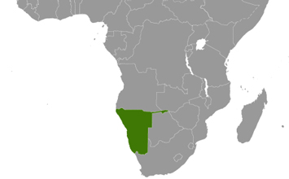

ShareCompartir
ShareCompartir

Since 2002, CDC has helped Namibia develop and implement HIV/AIDS prevention, care, and treatment programs. CDC-Namibia helps build the capacity of the country’s healthcare workforce. CDC’s assistance has strengthened national efforts to prevent HIV transmission and to expand care and treatment services. The aim of all support is to ensure that Namibia soon sees an AIDS-free generation.
Download Overview Fact Sheet
Staff
CDC office (physical presence)
9 U.S. Assignees
29 Locally Employed
Namibia at a Glance
Population: 2,482,100
Per capita income: $9,880
Life expectancy at birth women/men: 67/62 yrs
Infant mortality rate: 39/1000 live births
Source: Population Reference Bureau 2014: Namibia
Top 10 Causes of Death
- HIV/AIDS 25%
- Stroke 7%
- Lower Respiratory Infections 6%
- Ischemic Heart Disease 5%
- Diabetes 4%
- Road Injury 3%
- Hypertensive Heart Disease 3%
- Preterm Birth Complications 3%
- Interpersonal Violence 3%
- Diarrheal Diseases 3%
What CDC Is Doing

- Page last reviewed: May 13, 2016
- Page last updated: May 13, 2016
- Content source:
Global Health
Notice: Linking to a non-federal site does not constitute an endorsement by HHS, CDC or any of its employees of the sponsors or the information and products presented on the site.